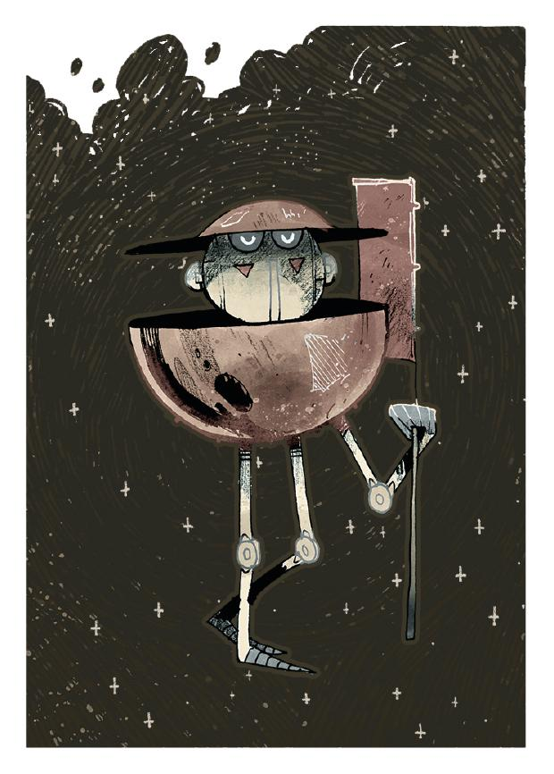
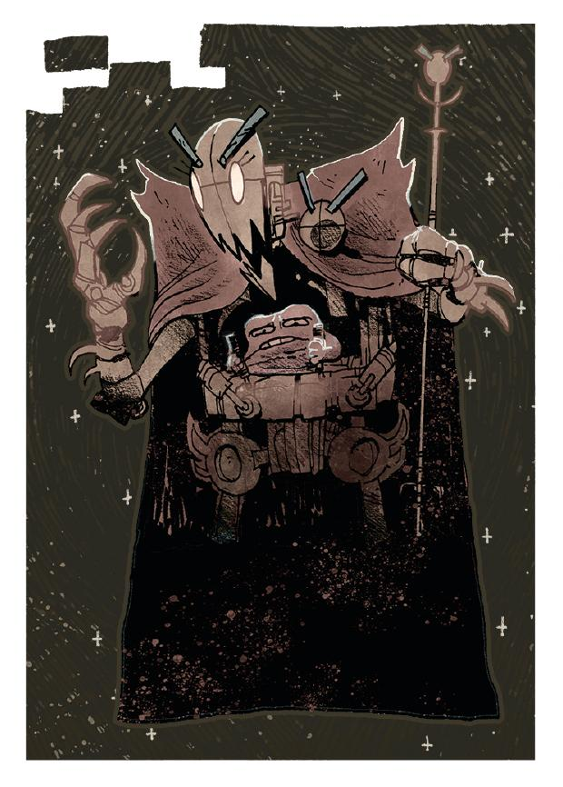
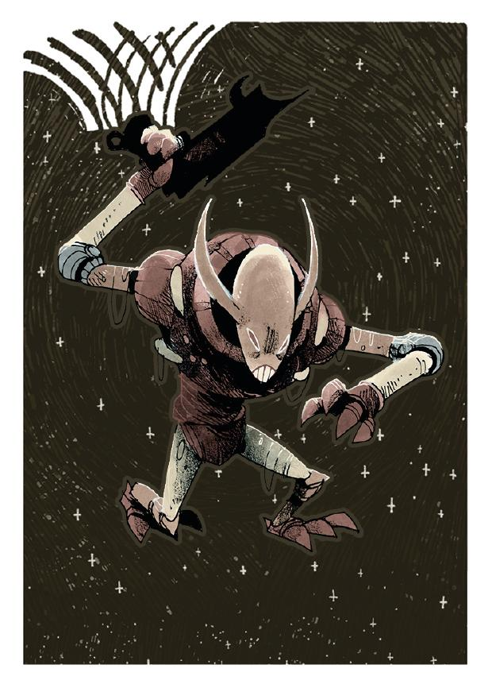
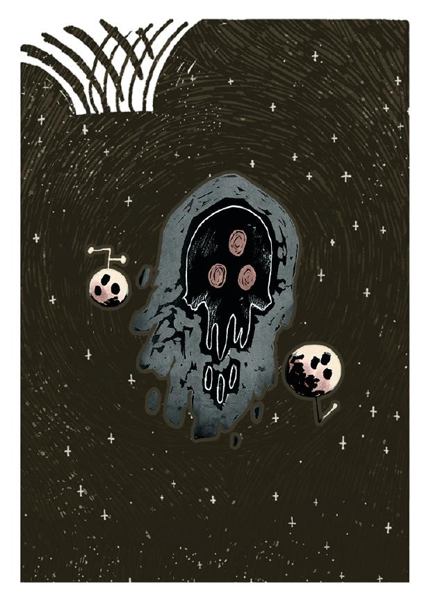

Overview A Fates Steward  Founder Magnate Advocate Caretaker Partisan Admiral Believer B Fates Pathfinder  Hegemon Planet Breaker Pirate Blight Speaker Pacifist Peacekeeper Warden C Fates  Overlord Survivalist Redeemer Guardian Naturalist  Gate Wraith Conspirator Judge